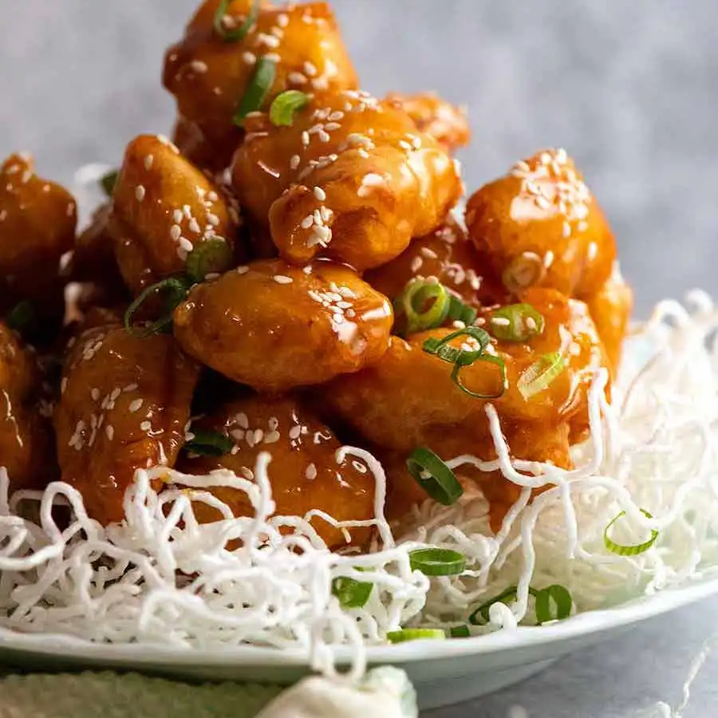

Honey Chicken

Description
This is a Honey Chicken with a crispy coating that’s built to last! This recipe brings together a plethora of Asian cooking secrets for a Honey Chicken that stays crispy for hours, even after tossing in the honey sauce. The Chinese frying batter yields a crispy, puffy coating that’s light and not greasy, and requires no special ingredients or equipment!
Ingredients
CHICKEN & MARINADE:
- 300g chicken thighs
- 1 tbsp light soy sauce
- 2 tsp Chinese cooking wine
- 2 tsp cornflour
DREDGING:
STAY-CRISPY PUFFY BATTER:
- 6 tbsp cornflour
- 4 tbsp flour
- 8 tbsp COLD soda water
- 1/4 tsp baking powder
- 1/4 tsp salt
HONEY SAUCE:
- 150g honey
- 25 g glucose OR corn syrup (light)
- 1 tbsp light soy sauce
- 2 tsp Chinese cooking wine
GARNISH / SERVING:
- 25g / 2 oz Vermicelli rice noodles (optional)
- Sesame seeds, finely sliced green onions
Steps
MARINATE & DUST CHICKEN:
- Marinade: Mix Chicken and Marinade in a bowl. Refrigerate for 30 minutes.
- Dust: Spread the 1/2 cup cornflour/cornstarch on a shallow plate. Scatter over about 8 to 10 chicken pieces, toss to coat, shake off excess, put on a plate. Repeat with all chicken.
COLD BATTER & FRY:
- Rack: Place a rack on a tray
- Heat oil: Fill small pot or large saucepan with 4cm / 1.7" oil. Heat to 180°C/350°F on medium high stove (or until chicken starts sizzle straight away when dipped).
- Make Cold Batter: Whisk together flour, cornflour/cornstarch, baking powder and salt. Pour in 7 tbsp soda water, then do minimum whisks just to combine (10 or so) - few lumps ok, better than whisking too much (changes coating texture).
- Batter thickness: should fully coat chicken easily, not be see through, but not thick and heavy - see video at 44 seconds. Use extra water 1 teaspoon at a time to achieve right thickness.
- Dredge: Drop 8 or so pieces of chicken into the batter. Turn to coat, then carefully place in oil.
- Fry #1: Cook for 3 minutes until light golden and crispy - when you pick them up, you can tell it's very crispy.
- Drain & repeat: Place on rack, repeat with remaining chicken - I cook in 4 batches, don't crowd the pot, brings oil temperature down too much.
- Cool chicken for 20 minutes (Note 4). Meanwhile, make Sauce.